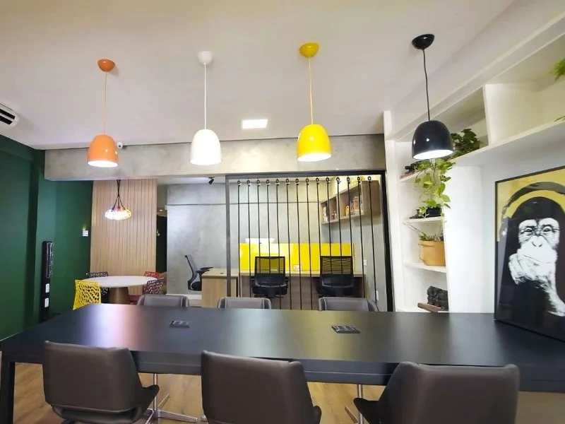

PARA A SUA ROTINA
Espaço compartilhado
Um ambiente para tirar projetos do papel e dar espaço às suas ideias. Conheça as estações e converse sobre a opção adequada ao seu dia a dia.
Disponibilidade e modalidades de uso a confirmar.
Consultar estação de trabalho